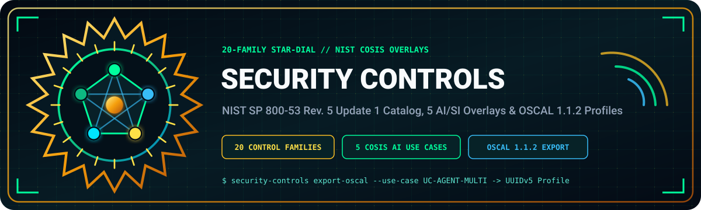

Generative SI – Assistant / LLM
Prompt-injection hygiene, tenant RAG isolation, PII minimization, and 32 KiB structured output bounding.
AC-4 · AU-3 · CA-7 · PT-2 · SC-5 · SI-10

NIST SP 800-53r5 Update 1 NIST COSIS 5 Use Cases OSCAL 1.1.2Machine-validated NIST SP 800-53 Rev. 5 (Update 1) control catalog and COSIS (Control Overlays for Super Intelligence Systems) use-case overlays with deterministic OSCAL 1.1.2 profile export and bidirectional crosswalks to secure-design-patterns and forge.
Prompt-injection hygiene, tenant RAG isolation, PII minimization, and 32 KiB structured output bounding.
AC-4 · AU-3 · CA-7 · PT-2 · SC-5 · SI-10
Dataset/checkpoint SHA-256 integrity, fine-tuning provenance lineage, feature schema validation, and drift monitoring.
CA-7 · MP-2 · PT-2 · SI-7 · SI-10 · SR-4
Server-bound per-route credentials, ≤ 15 active tools, destructive-action quarantine, and kernel/container sandboxing.
AC-6 · AC-6(10) · CM-7 · IR-4 · SC-5 · SC-7 · SC-39
Per-role service identity, anti-reward-hacking immutable Golden Template locks, stateless typed handoffs, and retry caps.
AC-4 · AC-6(1) · AU-6 · IA-9 · SC-5 · SI-7(1)
40-char SHA-pinned CI workflows, codified secure patterns, 5-gate deterministic verification, and SSRF-free codegen.
CA-2 · CM-2 · CM-5 · SA-8 · SA-11 · SA-15 · SR-3